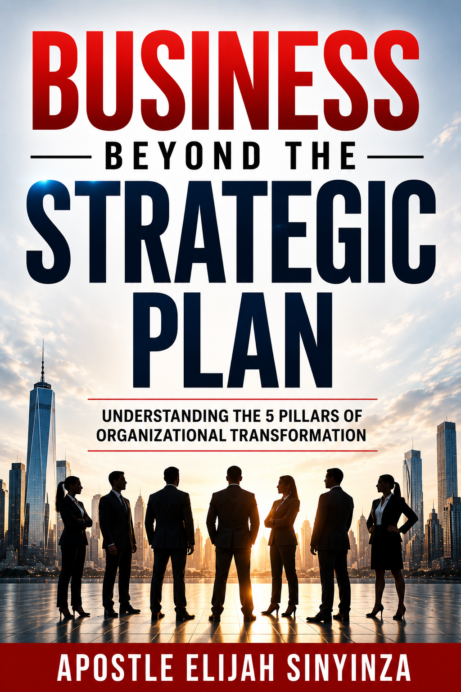
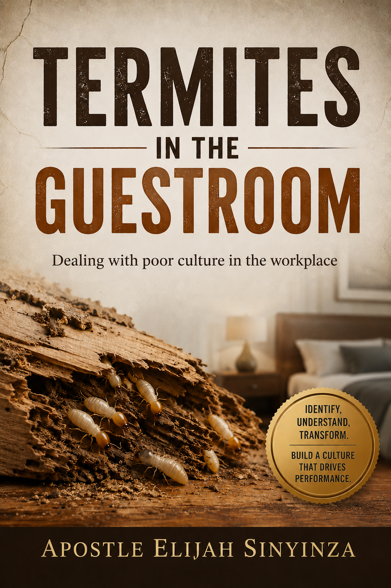

Karis Mind operationalises the published work of Elijah Sinyinza. GOLD is drawn from Business Beyond the Strategic Plan; OCAM is drawn from Termites in the Guestroom. This page is the reference for both.
Each instrument in Karis Mind translates a specific body of published work into a measurable assessment. The platform does not replace the books — it operationalises them, so certified practitioners can deploy the frameworks at scale.

The leadership teaching in this book is the source material for the GOLD assessment. The book teaches leadership as a progression: a leader leads themselves first, then leads others, then leads strategy, with growth as the engine that sustains all three.
GOLD takes its name directly from the author's own framing: Growth-Oriented Leadership Development. The instrument measures where a leader sits on that path of growth.

Dealing with Poor Culture in the Workplace · Divine Keys Publishing, 2024
This book articulates the cultural philosophy that OCAM operationalises. It sets out an eight-factor model of organisational culture — what the author calls the "DNA of Organisational Culture" — alongside the concept of Positive Mental Presence, the Three Cultural Orientations, and the Upward Spiral of culture remodelling.
OCAM — the Organisational Culture Assessment Model — translates these ideas into measurable behavioural items for multi-respondent diagnostics.
GOLD measures one thing: how growth-oriented a leader's development is. It does so through four progressive capacities drawn from Business Beyond the Strategic Plan. The author teaches these as a path — you lead yourself, then others, then strategy, and growth sustains all three.
The leader's internal foundation — self-discovery, self-leadership, and the alignment of intentions, thoughts, words, and actions. The author insists no leadership of others is possible without it. Sub-traits: Self-Discovery, Internal Alignment, Clarity of Sight, and Leadership Orientation Disposition.
Leading other people — how the leader influences, raises, listens to, and lifts others toward their potential. The author distinguishes three levels of influence (expression, impression, impact) and pushes toward the highest. Sub-traits: Influence Maturity, Listening and Followership, People-Raising Orientation, and Generational and Legacy Thinking.
Taking a vision through the seven stages of strategic execution — the author's 7Cs of Leading Strategy — and securing employee buy-in for change. The most operational of the four capacities. Sub-traits: Vision Conception, Strategic Communication, and Coordination and Buy-In.
The leader's commitment to balanced, ongoing growth across dimensions, and their deliberate use of growth environments. The author treats this as the engine that sustains the other three capacities — and the source of the parent name. Sub-traits: Knowledge-Based Growth, Relational Growth, Value-Based Growth, and Environmental Self-Curation.
OCAM operationalises the cultural philosophy of Termites in the Guestroom. It is a multi-respondent diagnostic built from four structurally distinct components — the eight-dimension DNA of culture, an employee-engagement outcome, a cultural orientation profile, and a maturity stage.
Eight cultural "DNA" dimensions — the doctrinal points the author identifies as the DNA of organisational culture. These are the conditions leaders must address to shape a positive corporate culture.
Identifies which of the three cultural orientations — Position, Performance, or Growth — currently dominates the workplace.
Measures whether employees are mentally — not just physically — present at work, across two facets: Mental Engagement, and Freedom from Distracting Pressures. This is the employee-engagement outcome.
Locates the organisation on the six-stage Upward Spiral of culture remodelling, derived from the DNA Index composite.
Each corresponds to one of the eight doctrinal points the author identifies in Termites in the Guestroom.
Whether employees understand the vision, find it meaningful, and connect their daily work to it.
Whether leaders practise both self-leadership and the development of others.
Whether employees understand why the organisation exists, beyond its day-to-day activity.
Whether employees know what is expected of them and how their performance is judged.
Whether employees feel resourced and supported to contribute to the vision.
Whether employees connect their own growth and reward to organisational outcomes.
Whether the organisation reliably honours the commitments it makes to employees.
Whether the systems, policies, and procedures that shape daily work actually function.
The Upward Spiral describes the maturity path an organisation travels as its culture strengthens. OCAM locates an organisation on one of six stages, derived from its DNA Index composite score.
The bands shown are recommended starting points, to be calibrated against pilot data as the instrument collects responses.
High anxiety and tension; employees protect existing interests. (DNA Index 20–35%)
Employees becoming acquainted with change; resistance present, low buy-in. (36–50%)
Willingness to change emerges; individual alignment begins. (51–65%)
Group-level alignment; increased buy-in; minimal residual resistance. (66–78%)
Employees drive the change; performance grows; accountability increases. (79–89%)
Creativity, innovation, and high ownership; people go the extra mile. (90–100%)
In Termites in the Guestroom, culture is shaped from three distinct spaces. The eight DNA dimensions are the foundation — they deal primarily with the intrinsic front — but the author is explicit that lasting culture change requires addressing all three. Each front demands different skills and produces different interventions, so OCAM's recommendations are organised by front, according to where the scores show the need.
Inherent individual behaviours — the sub-conscious attributes each person brings to work. This is the foundation the eight DNA dimensions primarily address.
Acquired social behaviours — the culture that develops through social interaction between people. The author calls the social-psychological skills this front demands among the most valuable, and most neglected, in management.
Enforced corporate behaviours — the culture shaped by management policies, processes, and procedures. Influenced through the disciplines of people management.
The author's caution: most managers lean heavily on the formal front — policies, targets, the disciplinary code — and neglect the intrinsic and informal fronts. OCAM is designed to surface all three, so recommendations are balanced across leadership, social, and management interventions rather than defaulting to enforcement alone.
These terms have specific meanings drawn from the source material. They are used consistently across the platform, the instruments, and all practitioner-facing material.
Growth-Oriented Leadership Development. Not an acronym of loose terms — the author's own framing in Business Beyond the Strategic Plan.
Personal Leadership, People Leadership, Strategic Leadership, Growth Leadership. Taught as a progression, not a checklist.
Organisational Culture Assessment Model. Operationalises the philosophy of Termites in the Guestroom (2024).
The author's eight-factor model of culture — the eight doctrinal points leaders must address to shape a positive corporate culture. Measured in OCAM's Part A.
Whether employees are mentally, not just physically, present at work. Measured across two facets: Mental Engagement, and Freedom from Distracting Pressures.
Position, Performance, and Growth — the three orientations, one of which dominates any workplace. Measured in OCAM's Part B.
The three spaces from which culture is influenced: Intrinsic (inherent behaviours), Informal (acquired social behaviours), and Formal (enforced corporate behaviours). OCAM's recommendations are organised across all three.
The six-stage maturity path of culture remodelling: Adoption, Adaptation, Acceptance, Alignment, Performance, Pinnacle.
The seven stages of strategic execution taught in Business Beyond the Strategic Plan: Conception, Consultation, Confirmation, Composition, Communication, Coordination, Controlling.
Certification gives you the depth to deploy GOLD and OCAM with real clients. Talk to us about the certification tracks.